|
Chelonoidis carbonaria
(Spix, 1824).
Incidiendo en la reproducción
Juanma Díaz, 2008
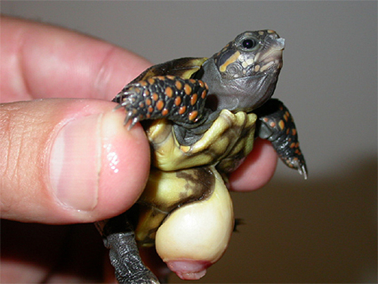
Chelonoidis carbonaria recién eclosionada. Fotografía de
Marcelo López.
Descripción y hábitat.
Chelonoidis carbonaria (Spix, 1824) es una tortuga de tamaño mediano
con una talla de entre 30 y 40 cm de plastrón (habiéndose registrado
casos de hasta 51 cm). Los machos suelen ser mayores que las
hembras, hecho que contrasta con la mayoría de los quelonios.
El cuerpo es de un tono oscuro llegando prácticamente al negro,
rompiéndose esta homogeneidad únicamente por las escamas rojas que
salpican las extremidades, cola y cabeza (pudiendo ser las manchas
en la última anaranjadas o amarillentas dependiendo de la
procedencia geográfica del individuo). Existe también una variedad
cromática con la cabeza especialmente roja (debido tanto a la
cantidad de escamas coloreadas como al intenso tono de esas) llamada
“Cherry Head”, siendo esta muy apreciada por los amantes de las
carbonarias. Los ejemplares procedentes de Paraguay y Argentina
suelen presentar esta librea.
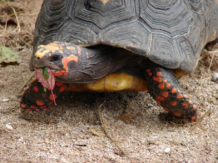
Ejemplar adulto de la variedad de cabeza roja. Fotografía de Herman
Acosta.
Ejemplares de la variedad de cabeza amarilla (izquierda) y Cherry
Head (derecha). Fotografías de Mariano Orantes.
A veces pueden encontrarse ejemplares con formas de color bastante
inusuales.
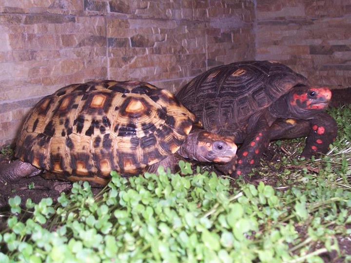
Comparativa de un ejemplar típico con otro con una coloración muy
singular. Fotografía de Mariano Orantes.
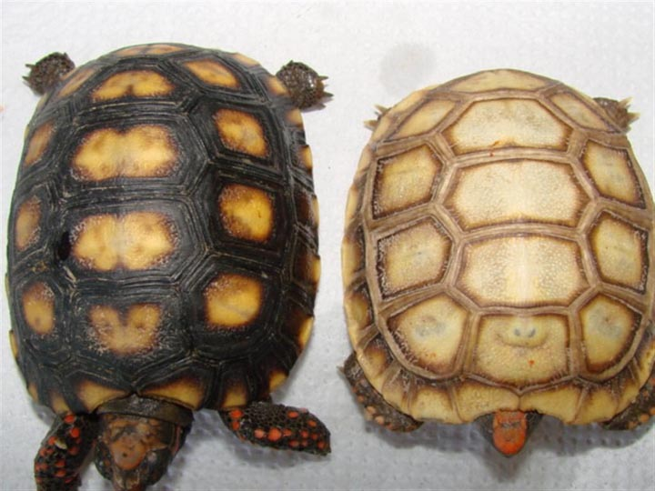
Comparativa de un ejemplar típico con otro hipomelánico. Fotografía
de Gabriel Martín Restelli.
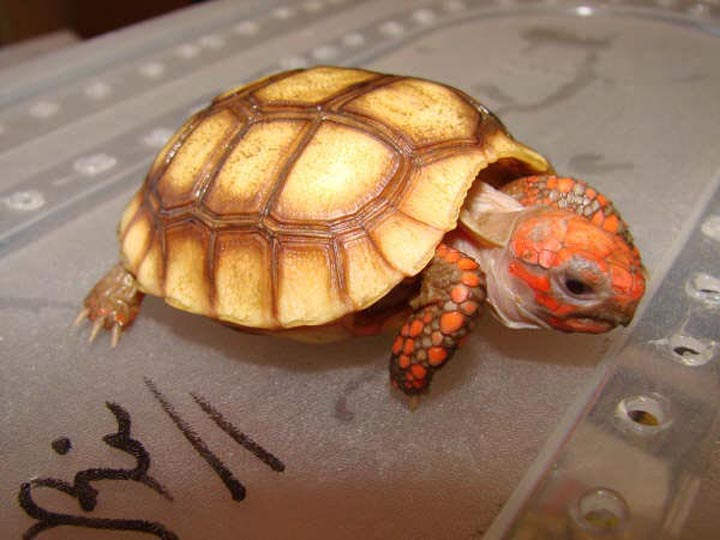
Ejemplar hipomelánico. Fotografía de Gabriel Martín Restelli.
El caparazón es alto y alargado, de un color negro o marrón oscuro,
presentando más claras (un tono amarillento) las areolas centrales
de cada serie de placas. Agrupamos las placas córneas del caparazón
en 11 pares marginales, 4 pares costales, 5 dorsales y una
supracaudal (PRYTCHARD, P. 1990).
Habita principalmente frondosas selvas de Sudamérica (aunque también
pasta en las húmedas sabanas de estas zonas), desde Panamá y
Colombia, a través de Venezuela y Brasil (excepto en la cuenca
amazónica) hasta llegar a algunas islas caribeñas; en las Guayanas,
Surinam, Bolivia, Paraguay y Argentina (FERRI, V. 2001), llegando a
compartir territorio a veces con C. denticulata.
|
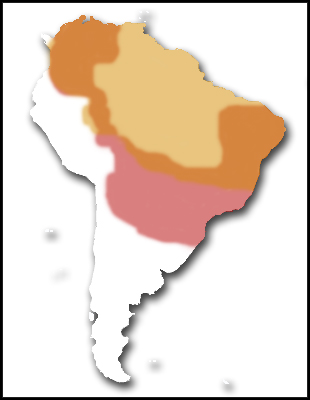 |
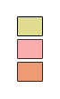 |
C. denticulata
C. carbonaria
Puntos comunes
|
Alimentación.
La alimentación de esta tortuga en libertad corre a cargo de
multitud de vegetales que encuentra en la selva, algunos insectos y
una pequeña cantidad de carroña ocasional.
Podemos decir que el 60 % de su dieta correría a cargo de verduras
(siendo esta la dieta más común en la mayoría de tortugas
terrestres) y un 40 % de fruta (suelen decantarse más por la fruta
madura).
El porcentaje de proteína de origen animal debería ser tan mínimo
que lo obviaremos en estos datos. Sí deberíamos tener en cuenta que
debería ser bajo en grasas y rico en proteínas. Pueden utilizarse
piensos especiales para tortugas o de gato, pudiendo también
servirse insectos vivos. La administración de estos alimentos debe
ser, aunque reducida, periódica ya que de lo contrario pueden
producirse graves trastornos en el animal. Una pequeña dosis una vez
a la semana será suficiente, siempre teniendo en cuenta lo ya
mencionado con anterioridad.
Por supuesto y como en todas las tortugas debemos prestar atención a
la relación calcio-fósforo de los alimentos que ofrecemos. Si esta
proporción no satisface las necesidades de 2:1 de nuestros animales,
deberemos condimentarla con suplementos. Del mismo modo también
deberemos añadir un complejo vitamínico en polvo si los alimentos
que ofrecemos son pobres en este sentido. Aún así, una dieta rica y
variada (el uso de plantas silvestres favorece mucho la alimentación
de las tortugas) deberá suponer la principal fuente de nutrientes.
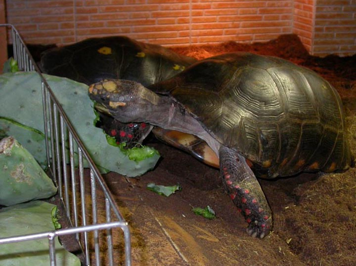
La chumbera (Opuntia spp.) es una excelente fuente de calcio.
Fotografía de Marcelo López.
El tema de la alimentación es sin duda uno de los aspectos más
importantes en el mantenimiento de las tortugas. Una mala
alimentación puede producir multitud de enfermedades y puede ser la
diferencia, como ya veremos, entre el éxito y el fracaso en la
reproducción.
Terrario.
Debemos tener en cuenta que se trata de una especie de un tamaño
mediano (no se trata de un gigante como G. sulcata o algunas
variedades de G. pardalis) aunque lo bastante grande como para
requerir unas considerables instalaciones, sobre todo debido a que
suele recomendarse su mantenimiento en interior o invernadero
protegido (aunque es perfectamente viable instalarlas en el exterior
cuando las condiciones de temperatura lo permiten y teniendo en
cuenta sus requerimientos en cuanto a la humedad).
Criaderos en zona de origen. Fotografía de Gabriel Martín Restelli.
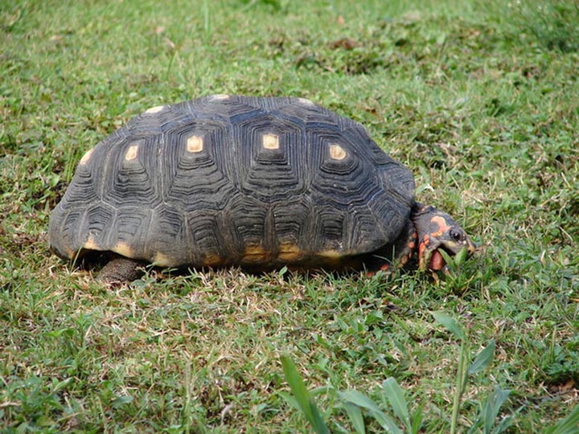
Hembra adulta pastando libremente mientras el tiempo lo permite.
Fotografía de Herman Acosta.
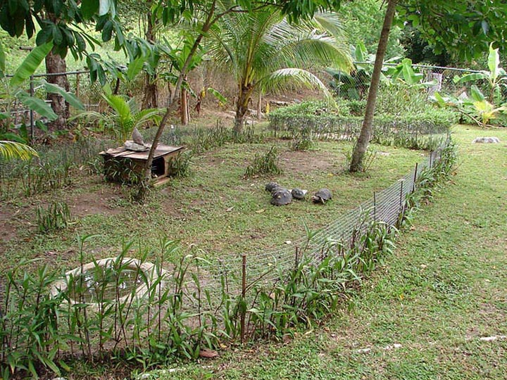
Acotando una zona de nuestro jardín podemos proporcionar un recinto
perfecto durante los meses cálidos. Fotografía de Herman Acosta.
El recipiente puede consistir en un terrario de cristal o de
plástico bien acondicionado mientras se trata de animales recién
nacidos o juveniles, pero habrá que pensar en crear una instalación
mayor cuando se trate de animales medianos o adultos. Cada vez más
utilizadas son las llamadas “mesas para tortugas” consistentes en un
simple cajón de madera que alberga el sustrato, piedras, recipientes
para comida y agua, etc. Tampoco es mala idea una instalación de
obra para ejemplares adultos, o incluso un invernadero en el jardín
o la terraza. Las posibilidades de tiempo, dinero y espacio de cada
aficionado serán las que decidan el tipo de instalación.
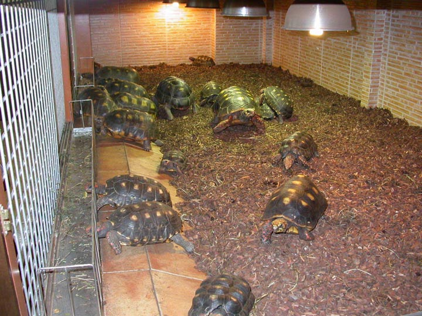
Grandes instalaciones para Chelonoidis carbonaria. Fotografía de
Marcelo López.
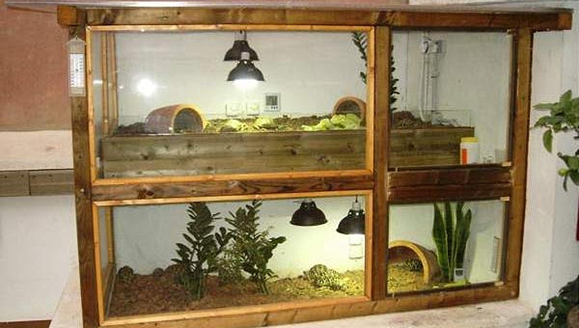
Invernadero en la terraza realizado principalmente con madera,
cristal y policarbonato. Fotografía de Salvador Laguna.
El sustrato debe permitir a las tortugas enterrarse ya que de este
modo podrán sentirse seguras y termo-regularse, además de ser de
suma importancia el hecho de que no sea excesivamente duro (madera,
cemento, etc) ya que esto producirá a la larga heridas en las patas
de las tortugas. Otro aspecto importante es la capacidad de
retención de líquidos, ya que esta especie necesitará zonas con un
sustrato relativamente húmedo. Puede ser muy recomendable una mezcla
de tierra (75%), mantillo (15%) y arena (10%) (RUBIO, G. 2006).
La calefacción correrá a cargo de una combinación de bombillas de
distintos tipos (“spot” o “basking lamps”, infrarrojas, cerámicas)
no siendo tan recomendable el uso de cables calefactores
(resistencias de silicona), mantas o rocas térmicas debido al
peligro que supone que la tortuga pueda morder los cables y
electrocutarse o bien quemarse debido al contacto directo con la
fuente de calor. El hecho de situar un conjunto de piedras (la
pizarra es perfecta para esto) debajo de una bombilla de
asoleamiento proporcionará a la tortuga la posibilidad de calentarse
con mayor rapidez (hay que tener en cuenta que esta piedra puede
llegar a alcanzar temperaturas muy altas si está muy cerca de la
fuente de calor).
La temperatura para esta especie debe ser de unos 20º C en la zona
más fría llegando hasta los 30º C bajo el punto de asolamiento.
La iluminación es de suma importancia y será proporcionada por
algunas de las bombillas mencionadas en el párrafo superior, además
de otras capaces de aportar radiación UV, como son tubos
fluorescentes o tubos compactos (con rosca E-27 que facilitan su
instalación) especiales para reptiles, o lámparas de vapor de
mercurio.
Existen lámparas cuyo uso no está especificado para reptiles y que
hace unos años se vienen utilizando en esta afición, por ejemplo las
Osram HQL Deluxe. Sin embargo parece no haber datos concretos sobre
la emisión de UV-B en este tipo de lámparas y sería poco probable
pensar que pueden llegar a emitir a unos niveles aceptables para
nuestras tortugas ya que no están fabricadas para tal fin. Después
de todo no debemos olvidar que la principal diferencia entre una
lámpara creada para proporcionar UV-B y una convencional no es sino
el cristal exterior, diseñado en la primera de tal modo que no
filtre las radiaciones que requieren los reptiles. Hoy día existe
una gran cantidad de bibliografía acerca del tema de la iluminación
aplicada a la terrariofilia, sin embargo se sigue investigando y es
una obligación para el aficionado el mantenerse al día de las nuevas
tecnologías.
El fotoperíodo oscilará entre 12/12 h. en verano y 10/14 h. en
invierno. Como ya dijimos se trata de una especie que habita zonas
frondosas donde la vegetación produce mucha sombra, por lo que no
gusta de un terrario excesivamente iluminado. Habrá que
proporcionarle por tanto lugares donde cobijarse tanto de la
iluminación como de la radiación UV. Crear sombras parciales con
plantas para que se resguarde sería quizás el mejor método que
podríamos emplear para tal fin, aunque un cajón de madera, una teja
de barro o una corteza de árbol tampoco son malas opciones.
La humedad estará en torno al 70-80 %, habiendo zonas más húmedas
que otras (hay que evitar el sustrato demasiado encharcado). El uso
de nebulizadores, cascadas, humidificadores o cualquier sistema que
ayude a mantener estos niveles será bien recibido; aunque también es
posible pulverizar a mano regularmente. Siempre debe haber un
recipiente con agua limpia para que las tortugas puedan bañarse y
beber.
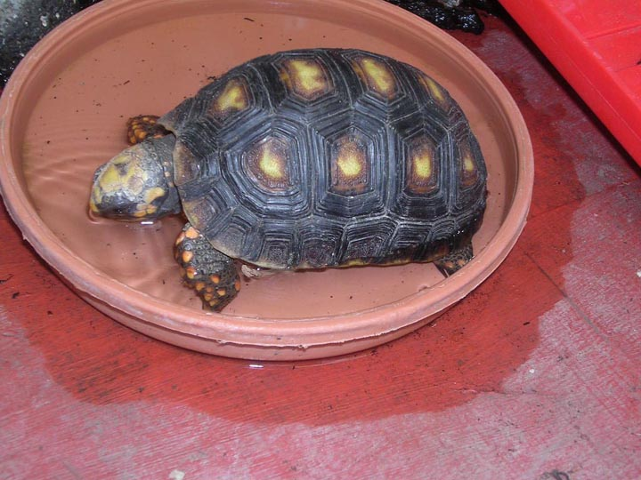
Chelonoidis carbonaria bebiendo. Fotografía de Lourdes Sió.
Dimorfismo sexual.
En cuanto al dimorfismo sexual, podemos nombrar algunos rasgos
distintivos:
• La ya nombrada diferencia de tamaño, siendo por lo general el
macho mayor que la hembra.
• El caparazón del macho presenta una forma ligeramente estrechada
en el centro de su cuerpo (que podríamos denominar cintura) por lo
que muchos autores hacen referencia a su forma “de reloj de arena”,
debido a la semejanza que presenta con éstos. El caparazón de la
hembra suele ser bastante más uniforme en ese sentido. Esta
característica es más evidente en ejemplares procedentes de la zona
norte de la cuenca amazónica y no tanto en otros (METRAILLER, S.
1997).
Comparación del caparazón del macho (izquierda) y de la hembra
(derecha). Fotografías de Marcelo López.
• El plastrón del macho presenta una forma más o menos cóncava, que
presumiblemente ayudará en la monta de la hembra durante la época
reproductiva. En las hembras esta suele darse tan solo en ejemplares
con mucha edad y en muy pequeño grado.
Comparación del plastrón del macho (izquierda) y de la hembra
(derecha). Fotografías de Marcelo López.
• La cola, seguramente lo que todo aficionado mira cuando quiere
sexar una tortuga. Tanto en tortugas terrestres como en acuáticas la
cola en el macho es claramente mayor (sobresaliendo ampliamente de
las placas caudales) y más ancha en su base (conteniendo el pene)
que en la hembra. La distancia de la cloaca respecto a la base de la
cola es mayor también en el macho.
• Las placas anales forman un ángulo mucho más amplio en los machos.
Comparación de cola y placas anales del macho (izquierda) y de la
hembra (derecha). Fotografías de Marcelo López.
Todas estas características no son apreciables en los primeros años
de la tortuga, haciéndose más evidentes con los años y permitiendo
sexar de un modo más o menos acertado al ejemplar.
El comportamiento del individuo también puede ser un indicativo de
su sexo, aunque a veces la territorialidad hace que las hembras
dominantes adquieran posturas que por regla general (aunque esto no
lo haga en absoluto antinatural, pues en libertad ocurre exactamente
igual) corresponderían a los machos.
En varios Zoológicos brasileños situados al sur del Trópico de
Capricornio se detectaron 19 hembras adultas (la mayoría capturadas
en el norte y nordeste de Brasil cuando estaban recién eclosionadas
y donadas posteriormente en edad juvenil a los zoos) con
características morfológicas, comportamentales y reproductivas
extrañas pudiéndose llamar a esto “masculinización de las hembras”.
Hablamos de plastrones ligeramente cóncavos y colas relativamente
largas, gran diferenciación del clítoris llegando a parecer el pene,
retención de huevos e hipercalcificación de los mismos,
vocalizaciones similares a las emitidas por los machos o
participación en secuencias incompletas de combate con machos. Los
análisis de testosterona demostraron niveles más altos en estas
hembras masculinizadas que en las normales con las que se
comparaban. Las dos posibles explicaciones que se manejaron estaban
relacionadas con la temperatura y eran las inadecuadas temperaturas
de incubación (por exceso o por defecto) que podrían haberse dado en
los lugares de donde procedían naturalmente, o bien los posibles
desequilibrios endocrinos que se hubiesen producido durante el
desarrollo post embrionario debido a las bajas temperaturas a las
que habrían estado expuestas en las latitudes sureñas tras ser
capturadas. (GUIX, J. C. & FEDULLO, D. L. & MOLINA, F. B. 2001).
Estatus y protección.
Chelonoidis carbonaria está incluida en el apéndice II del convenio
de Washington o CITES (Convention on International Trade in
Endangered Species of Wild Fauna and Flora). En la Unión Europea (la
cual adapta los listados CITES a su propia reglamentación) esta
especie quedaría englobada en el anexo B.
En el apéndice II de CITES se encuentran aquellas especies que a
pesar de no estar en grave peligro de extinción (como sería el caso
de las especies incluidas en el apéndice I), se estima necesario
regular su estado para no llegar a estarlo (RUBIO, G. 2006). Es el
caso de Chelonoidis carbonaria.
Esta tortuga es capturada en su hábitat natural por los cazadores
locales para ser vendida en mercados sobre todo para consumo humano,
ya que a pesar de la predilección de estos por C. denticulata debido
a su mayor talla, la caza sin cuartel que ha sufrido esta especie ha
supuesto la reducción de sus poblaciones y por tanto la necesidad de
los indígenas de buscar en C. carbonaria una nueva fuente de
alimento. Además supone una considerable fuente de ingresos debido a
su exportación como mascota. CITES en 1995 autorizó cupos de
exportación de 500 ejemplares tanto de C. denticulata como de
C.
carbonaria para Guyana y de 630 ejemplares de C. carbonaria y 692 de
C. denticulata para Surinam. Al no haber ningún tipo de
restricciones sobre esa actividad, dichos ejemplares serán
recolectados de las poblaciones silvestres (HERNÁNDEZ, O. 1997).
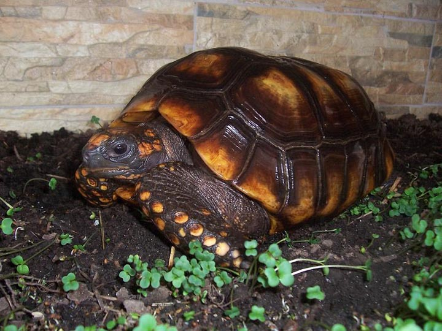
Hembra adulta de C. Denticulata. Fotografía de Fotografía de Mariano
Orantes.
Generalidades sobre la reproducción.
Según las observaciones llevadas a cabo en la Agripecuaria Puerto
Miranda, en Venezuela en 1997, se estima que las hembras tendrían
una talla de 20 a 22 cm cuando llegan a la etapa reproductiva
mientras que en los machos esta sería de 22 a 24 cm (COLVEE, S.).
Cortejo.
Hacia Marzo o Abril (sería recomendable simular lluvias en esta
época) comenzará el ritual de cortejo en el que los machos persiguen
a las hembras en celo moviendo la cabeza, oliéndole la cola y
emitiendo un ruido parecido al que oímos a una gallina. Si se
mantienen varios machos juntos es probable que se produzcan algunos
enfrentamientos sin demasiada importancia.
Una vez el macho confirma que la tortuga a la que corteja es una
hembra y esta está receptiva, procederá a la monta, durante la cual
no cesará de emitir su particular sonido.
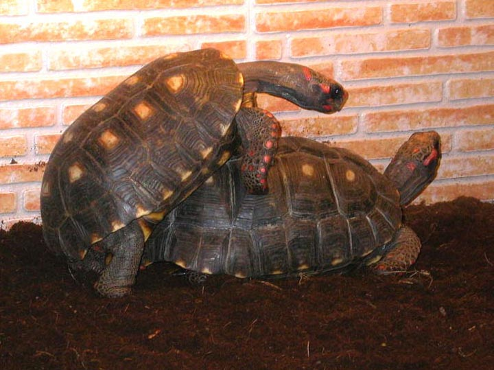
Cópula en instalaciones de interior. Fotografía de Marcelo López.
En los trabajos sobre los experimentos realizados por Omar E.
Hernández y Ernesto O. Boed en un Zoocriadero de Morrocoy de
Venezuela durante la temporada reproductiva 95-96, se plantea la
posibilidad de que C. carbonaria, pueda presentar una disminución de
la sociabilidad al aumentar el espacio y refugios disponibles a la
vez que disminuye el número de ejemplares, hecho que se confirma en
otras especies estrechamente emparentados con esta como son C. denticulata y
C. elephantopus. Sería por tanto lógico pensar que un
único macho no fecundará a todas las hembras que se encuentren en un
recinto excesivamente grande, por lo que dichos autores recomiendan
recintos medianos con varios machos, lo que además reduce el riesgo
que supondría el que el único macho del grupo tuviese problemas de
fertilidad.
Gestación y puesta.
En libertad, los desoves se inician justo tras las máximas
precipitaciones de la estación lluviosa evitando así que los nidos
se inunden, y finalizan en los meses de sequía (HERNÁNDEZ, O. 1997).
Es de vital importancia proporcionar un lugar adecuado para el
desove ya que de no encontrarlo se podría dar un caso de distocia
(otras posibles causas son una mala alimentación, obesidad, estrés,
malformaciones, enfermedades, etc), imposibilidad de realizar la
puesta, sufriendo la hembra una retención que le produciría a largo
plazo la muerte. En este caso habría que acudir inmediatamente al
veterinario el cual probablemente iniciaría un tratamiento con
oxitocina, previo uso de calcio intramuscular.
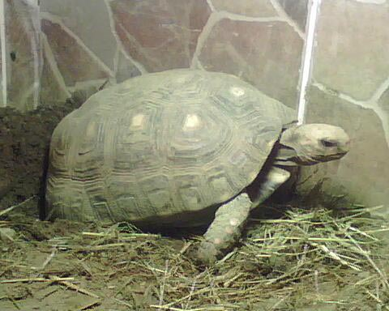
Desove de C. carbonaria. Fotografía de Antonio Alcalá.
Últimamente se están obteniendo buenos resultados con los llamados
“cajones de puesta”, parecidos a una mesa para tortugas pero con una
mayor altura para albergar mayor cantidad de sustrato. Además estos
cajones solo se utilizarían en la época reproductiva y con hembras
grávidas por lo que proporcionamos un entorno limpio y sin otras
tortugas que puedan estresar a la hembra, además de resultar
sumamente ventajoso a la hora de encontrar los huevos (también
aumentará la probabilidad de que los huevos no hayan sido pisoteados
ni rotos por otras tortugas).
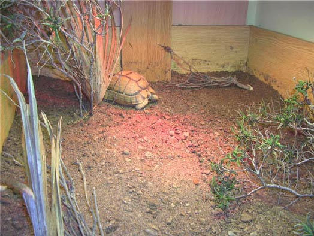
Hembra de Testudo kleinmanni en un cajón para puestas interiores.
Fotografía de Fernando Pérez.
Estos cajones se utilizan principalmente con especies de tamaño
mediano que realizan las puestas en épocas relativamente frías en
nuestro territorio, imposibilitándose el hecho de realizarse en
exterior. En el caso de Chelonoidis carbonaria sería posible que
realizase la mayor parte de sus puestas en exterior,
proporcionándoles igualmente un lugar indicado para tal fin.
Si la mesa de tortugas es suficientemente amplia y profunda podrá
acotarse una parte mediante ladrillos o madera para aumentar la
cantidad de sustrato y que la hembra desove allí.
El sustrato de puesta deberá ser lo suficientemente blando para
poder ser excavado. Se recomienda remover el sustrato de la zona de
puestas durante la época de desove. La profundidad deberá ser como
mínimo igual a la longitud del caparazón de la hembra de mayor
tamaño.
El número máximo de desoves para esta especie está en 6 al año
(HERNÁNDEZ, O. & BOEDE, E., 2000), estando la media entre 2,33 y 4 (MEDEM,
F. & Col. 1979; CASTAÑO, O. & M. LUGO 1981; PRITCHARD, P. & P.
TREBBAU 1984; HERNÁNDEZ, O. 1997).
Los huevos, con un tamaño de aproximadamente 43 x 48 mm y un peso de
entre 40 y 50 gramos serán por lo general más numerosos en el caso
de las hembras de mayor tamaño. El número puede variar entre 3 y 15
por puesta (HIGHFIELD, A).
Incubación.
Tras la puesta retiraremos los huevos y los pondremos en la
incubadora. Los huevos de reptiles, a diferencia de los de las aves,
no poseen chalazas, que son unas estructuras que se forman dentro
del huevo evitando que el embrión cambie su posición y sea aplastado
por la yema. Se supone que en los primeros días el embrión todavía
no ha adoptado una posición definitiva por lo que no habría peligro
en rotar los huevos pero muchos aficionados siguen teniendo la
precaución de no girarlos de su eje original al recoger la puesta y
depositarla en la incubadora.
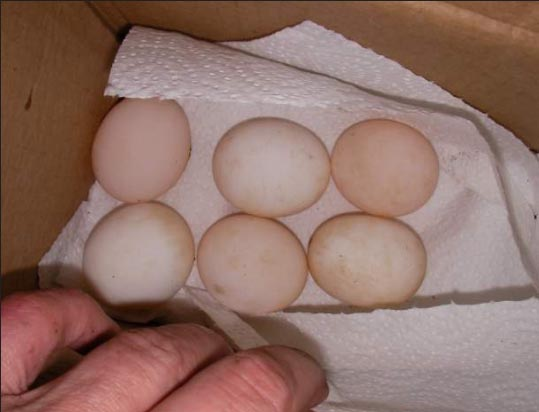
Recolección de la puesta. Fotografía de Antonio Alcalá.
Esta consistirá en un recipiente lo más estanco posible provisto de
una fuente de calor conectada a un termostato. Cuanto más exacto sea
el termostato, más posibilidades de éxito tendremos en la
incubación.
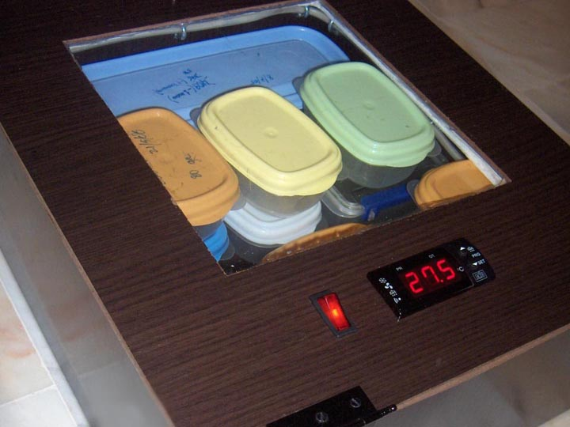
Incubadora casera. Fotografía de Juanma Díaz.
Como sustrato de puesta podemos utilizar vermiculita humedecida en
agua en una proporción de 1:1 (al peso). Otras opciones, menos
utilizadas son la perlita, la turba o el musgo.
La humedad ambiental debe estar entre el 70 y el 80 %. Niveles por
encima del 90 % pueden llegar a ser perjudiciales. (HIGHFIELD, A).
Si los huevos se cubren con moho debemos eliminarlo y para ello
podemos limpiarlos con un cepillo o algodón mojados con una solución
de clorhexidina. Esto no debería afectar a la viabilidad del huevo
una vez solucionado (RUBIO, G. 2006).
En cuanto a la temperatura, se ha dicho que el rango entre 27 y 33º
C es correcto aunque según la experiencia de los criadores parece
más acertado el que hay entre 29 y 31º C (HIGHFIELD, A).
La incubación durará entre 120 y 190 días siendo una media acertada
145 (HIGHFIELD, A).
Fertilidad.
La edad de la hembra limitará la fertilidad de los huevos, a mayor
edad, el índice de fertilidad disminuye (RUBIO, G. 2006).
El cambio de color no será un signo fiable de infertilidad ya que
muchos huevos fértiles se tornan más oscuros debido al desarrollo
embrionario (RUBIO, G. 2006).
Para saber si un huevo es viable podemos ponerlo a trasluz (usando
una linterna por ejemplo) y observar el interior. En la segunda
semana tras el desove será más fácil apreciar los vasos sanguíneos,
signo de que el huevo se desarrolla correctamente. Pasado este
tiempo se complica este proceso pues las estructuras llenaran por
completo la cavidad (RUBIO, G. 2006).
Los huevos fértiles adquirirán una superficie más rugosa mientras
que los infértiles permanecerán sin cambio alguno (Thomson, M. B.
1998).
Un veterinario puede sacarnos de dudas en caso de no estar seguros.
El Doppler capta el sonido del flujo sanguíneo de modo que nos
confirmará o no la viabilidad de los huevos (RUBIO, G. 2006).
La alimentación como factor determinante en la producción de huevos.
La alimentación de la madre durante la formación de folículos (vitelogénesis),
influirá en la cantidad de vitelo absorbido por los recién nacidos.
Omar E. Hernández y Ernesto O. Boed nos ofrecen un interesante
escrito acerca de la importancia de la alimentación en la producción
de huevos y el crecimiento en C. carbonaria.
Estos autores llevaron a cabo un experimento en el que variaron la
dieta de un grupo de carbonarias adultas (235 hembras y otros tantos
machos). En la temporada 95/96 esta alimentación consistió en un
2,17 % de proteína y un 11,1 % de glúcidos. Al año siguiente estos
valores cambiaron a un 6,41 % de proteína y un 22,18 % de glúcidos.
Los resultados llevaron a concluir que las hembras utilizan los
nutrientes de una mejor alimentación para la producción de más
huevos.
En concreto se observaron las siguientes medias:
|
Temporada |
Nidos por hembra |
Huevos por nido |
Huevos por hembra |
Hembras sin desove observado |
|
95/96 |
2,14 |
3,64 |
7,75 |
32 |
|
96/97 |
2,92 |
4,06 |
12,01 |
20 |
Eclosión.
La tortuga al nacer posee una estructura en el pico llamado
carúncula de la que se vale para romper el cascarón desde el
interior. Este falso “diente” desaparecerá pasadas unas semanas de
la eclosión.
Los factores que desencadenan la eclosión son varios: falta de
oxígeno, aumento de CO2 así como de la temperatura y humedad, y
básicamente la disminución del espacio (RUBIO, G. 2006).
Algunos criadores recomiendan ayudar a la tortuga a la hora de la
eclosión retirando la cáscara y sacándola del huevo para pasarla a
un terrario. De este modo se evita el riesgo de que la tortuga no
logre romper el cascarón y muera por asfixia. Hay incluso
aficionados con años de experiencia que realizan sistemáticamente
una pequeña incisión en la cáscara una vez se ha alcanzado la fecha
prevista para la eclosión de modo que los nonatos lo tengan más
fácil.
Otros en cambio opinan que es bueno dejar que la tortuga nazca por
sus propios medios e incluso permanezca un tiempo en el huevo en la
incubadora reabsorbiendo el vitelo. De este modo se produce un
cambio menos brusco y no corremos el riesgo de romper el saco
vitelino.
Si se opta por la primera opción no debemos ser impacientes. No
todas las tortugas nacen a la vez de modo que procederemos a retirar
trozos del cascarón que permitan salir a la tortuga una vez haya
pasado un tiempo prudencial. Sobra decir que es necesaria una gran
experiencia para prever cuando es el momento justo en el que la
tortuga debe nacer.
Neonato rompiendo el cascarón. Fotografías de Juanma Díaz.
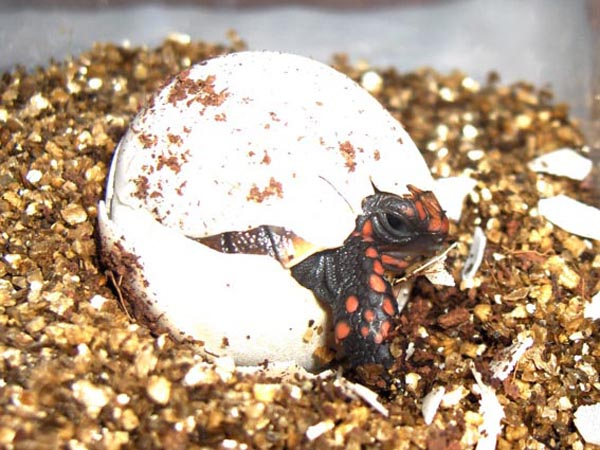
La eclosión puede durar varios días mientras se reabsorbe el vitelo.
Fotografía de Juanma Díaz.
Registro de las crías.
No debemos olvidar tomar todas las precauciones posibles a la hora
de registrar nuestras crías. Para ello deberemos comunicar cuanto
antes, tanto las puestas como nacimientos, al SOIVRE (Servicio
Oficial de Inspección, Vigilancia y Regulación de las Exportaciones
Agrícolas al Extranjero), el cual se encarga de la aplicación del
convenio CITES en España.
Es recomendable tomar fotografías junto a periódicos que muestren la
fecha del desove o nacimiento.
Una vez se produzca el desove, un inspector del SOIVRE visitará las
instalaciones para tomar datos del número de huevos y las fechas en
que han sido depositados. Más adelante se visitan las tortugas
eclosionadas y se les proporciona un único número de registro para
toda la puesta. Un Documento de Cesión por parte del criador en el
que se especifiquen todos sus datos, los del nuevo dueño y el número
de registro de todas las crías de la puesta será toda la
documentación que necesitará la pequeña tortuga en el futuro.
Cuidados de los neonatos.
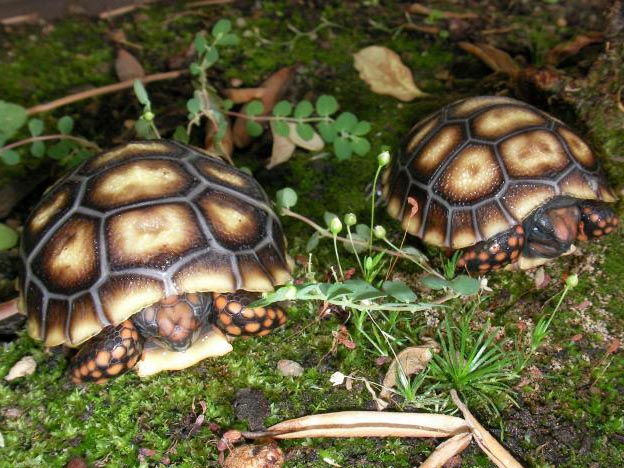
Ejemplares recién nacidos. Fotografía de Antonio Alcalá.
Un motivo por el que no es conveniente dejar los huevos en el
recinto de los adultos es que estos se comen las crías que
encuentran tras la eclosión. Por ese motivo los pequeños serán
alojados en pequeños terrarios donde además sea más fácil controlar
su evolución.
Este terrario debería ser lo más higiénico y estéril posible: sin
adornos, una bayeta húmeda como sustrato para evitar que se deseque
el saco vitelino (RUBIO, G. 2006), un recipiente de fácil acceso y
poca profundidad para el agua y un refugio. Si deberá ser cálido y
para ello le proporcionaremos una bombilla (spot normal, infrarroja,
etc) y una fuente de rayos UV.
Es recomendable limpiar el saco vitelino y la abertura del plastrón
hasta que se hayan reabsorbido y cerrado por completo
respectivamente. Para ello podemos usar gasas estériles o
bastoncillos de algodón humedecidos en yodo. De este modo, junto con
la higiene del terrario, evitaremos los posibles focos de infección
que implican tanto riesgo en este momento.
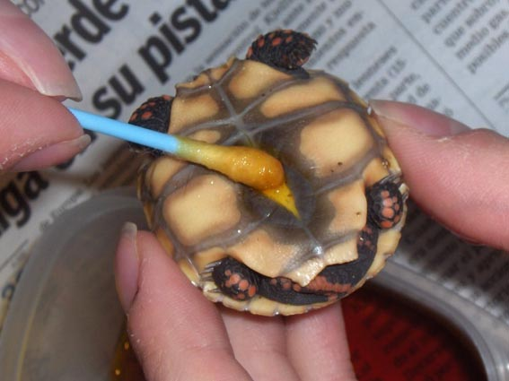
Proceso de limpieza de los restos de vitelo. Fotografía de Juanma
Díaz.
Durante los primeros días la tortuga no comerá nada, nutriéndose de
las reservas del saco vitelino. Una vez reabsorbido (3-4 días tras
la eclosión si sale del huevo sin reabsorberlo) empezará a tomar
alimentos. Hay criadores que recomiendan dejar las cáscaras de los
huevos para que se los coman como fuente de calcio (RUBIO, G. 2006).
Reabsorción del saco vitelino. Fotografías de Juanma Díaz.
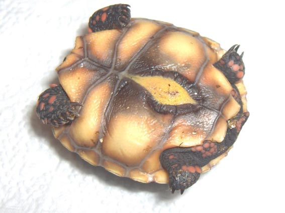
Vitelo limpio y reabsorbido casi por completo. Fotografía de Juanma
Díaz.
La alimentación será la misma que para los adultos, procurando
ofrecerles piezas más blandas y de menor tamaño. Debemos retirar el
sobrante a menudo.
Crecimiento de las crías.
Chelonoidis carbonaria es una tortuga de rápido crecimiento pero
debemos vigilar su alimentación para evitar las deformidades del
caparazón y otras patologías más importantes.
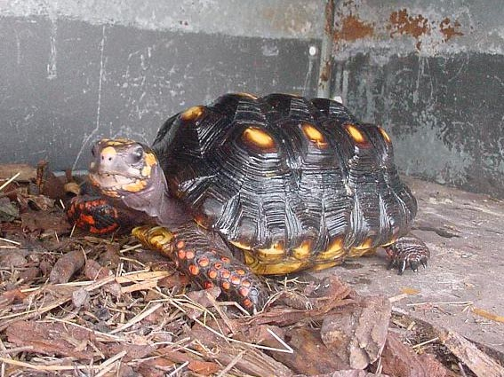
Ejemplar con evidente piramidismo. Fotografía de Mariano Orantes.
Una correcta alimentación, tanto en cantidad como en calidad, desde
el primer momento puede ahorrarnos problemas futuros.
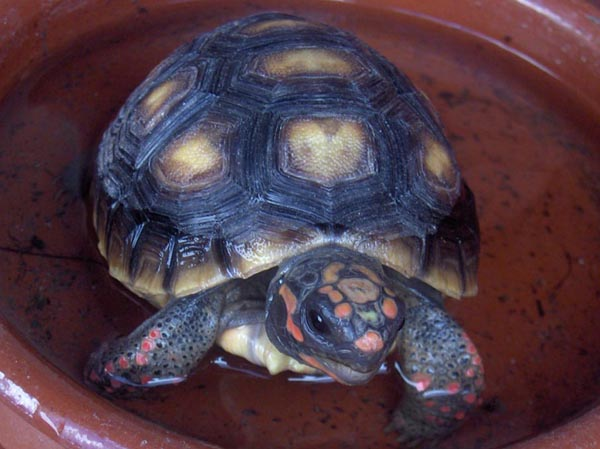
Juvenil con dos años de edad. Fotografía de Juanma Díaz.
Agradecimientos.
Antonio Alcalá, Fernando Pérez, Gabriel Martín Restelli, Herman
Acosta, Juan Carlos Peris, Lourdes Sió, Marcelo López, Mariano
Orantes, Paco Rojas, Salvador Laguna. Simplemente gracias.
Bibliografía.
COLVEE, S. Aspectos reproductivos de la tortuga de patas rojas en
cautiverio. En Reptilia (E), 58-67.
FERRI, V. 2001. Tortugas y galápagos. Ed. Grijalbo.
GUIX, J. C. & FEDULLO, D. L. & MOLINA, F. B. 2001. Masculinization
of captive females of Chelonoidis carbonaria (Testudinidae).
HERNÁNDEZ, O. & BOEDE, E. 2000. Efecto de la Alimentación sobre el
Crecimiento y Producción de Huevos de Geochelone (Chelonoidis)
carbonaria (Spix, 1824) bajo Condiciones de Cautiverio. En Acta
Biológica Venezuélica, VOL. 20 (2): 37-43.
HERNÁNDEZ, O. & BOEDE, E. 2001. Efectos de la Densidad y la
Proporción de Sexos en la Reproducción en Cautiverio del Morrocoy
Geochelone (Chelonoidis) carbonaria (Spix, 1824). En Acta Biológica
Venezuélica, VOL. 21 (2): 29-37.
HERNÁNDEZ, O. 1997. Reproducción y Crecimientos del Morrocoy,
Geochelone (Chelonoidis) carbonaria (Spix, 1824). En Biollania 13:
165-183.
HIGHFIELD, A. Incubating Redfoot Tortoise Eggs.
www.tortoisetrust.org
MERCHAN, M. & FIDALGO, A. M. & PEREZ, C. Biología, distribución y
conservación del Morrocoy o Tortuga carbonera. Geochelone
carbonaria. En Reptilia (E), 30-38.
MÉTRAILLER, S. 1997. Geochelone carbonaria. En Reptilia (E), nº 9:
53-55.
PEREZ, F. 2006. Utilización de cajones para puestas de interior. Una
experiencia personal. www.testudinae.com
PEREZ, J. Geochelone carbonaria. www.iespana.es/tortuga/index.htm
RUBIO, G. 2006. Tortugas terrestres en cautividad. Ed. Egartorre.
SÁNCHEZ, F. 2005. La tortuga de patas rojas: Geochelone carbonaria.
www.testudinae.com
VARIOS, 2004. Principios Básicos de la Iluminación y Tipos de
Lámparas. www.testudinae.com
|